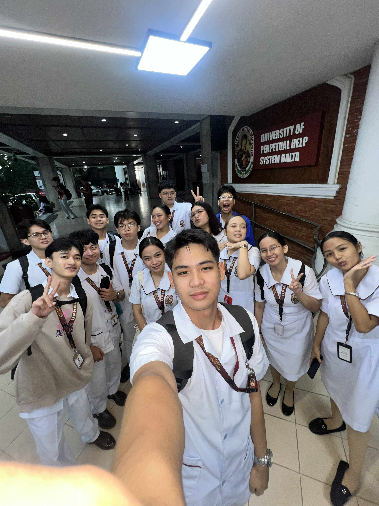
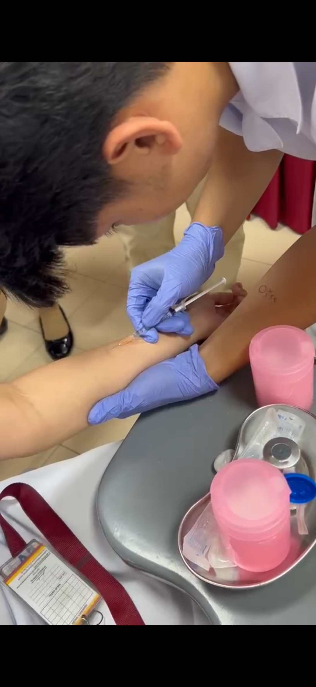

04
My Experience in
My Experience in
Fundamentals of Nursing

"Learning, growing, and making friends I'll keep forever."
I have learned a lot from my clinical instructors and it was so much fun being with them and spending the time with them while learning. I have made a lot of friends in this subject and I hope to be with all of them to spend more time together.
New Friends Made
Inspiring Instructors
Hands-On Learning
Documentary
